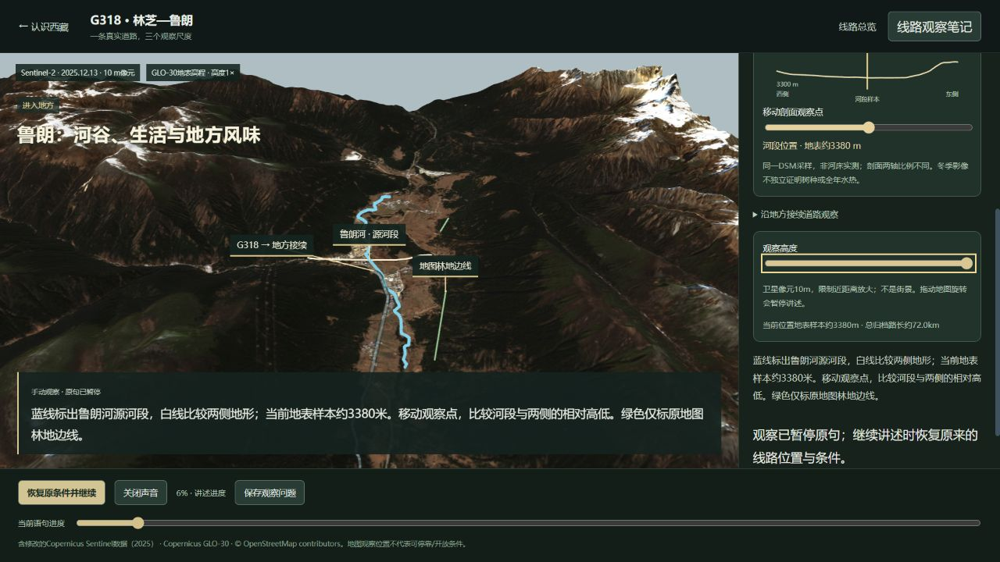
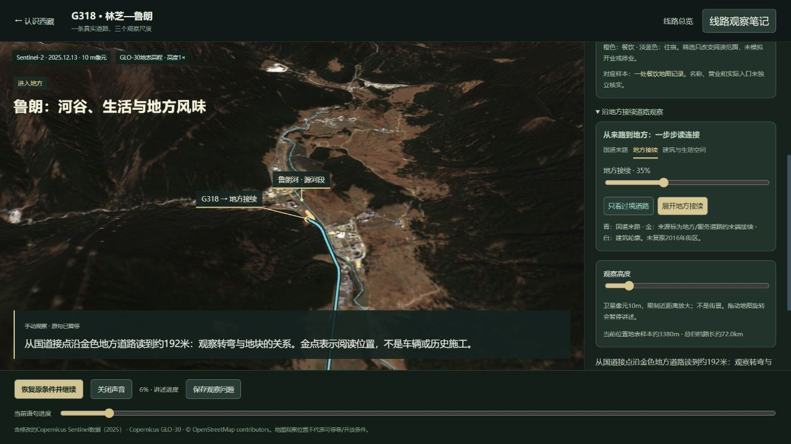
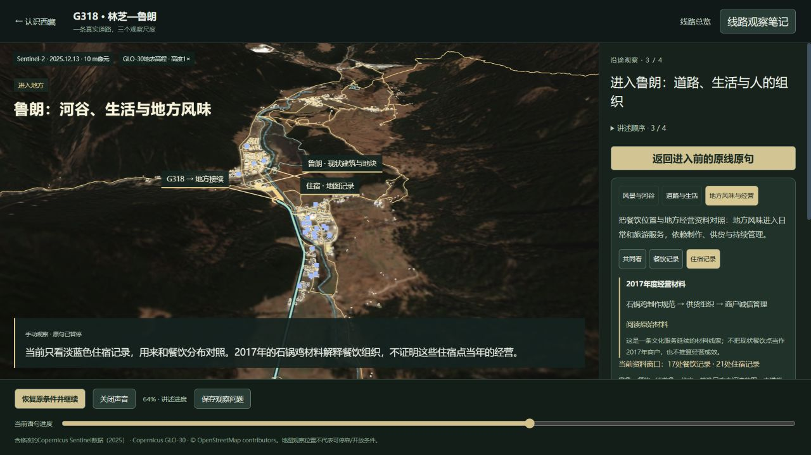

2026-10-19 · 有界实际验收
进入地方，操作看清，
保存后回到原线。
本轮从线路入口实际进入，四段录音自然播放至结束一次，再检查鲁朗操作、笔记编辑保存、刷新恢复和原线继续。只修复两处已复现的问题，六章与地点范围保持冻结。
修复的是操作与结果的断点
- 风景观察高度不生效：原相机把河谷视距固定为3公里，滑块虽改变数值，画面没有改变。现在相机读取真实观察高度，初始镜头仍保留原有范围，实际近看与拉远已核对。
- 道路对照仍在讲服务：原来选择“只看过境道路”时仍显示餐饮住宿点，说明也没有切换。现在道路操作收起服务点，0%解释国道接点、35%解释约192米的接续；主动选择餐饮或住宿后才恢复相应图层和说明。


保存与返回实际结果
临时笔记保存并刷新后正文仍在。返回时恢复地方风味角度、住宿筛选、2500米观察高度和原句64%；继续讲述恢复该句餐饮画面。返回进入前原线后，第48.1公里、原句43%和3000米高度恢复；继续后接入总结，没有重复进入鲁朗。检查结束后恢复原有空白笔记，并把检查副本恢复线路首句。用户原标签未操作。

结论与保留边界
风景与生活的空间差异可以直接操作对照，本段功能往返及本轮两处对应问题可以收口。人文价值目前是现状服务位置与有年代的经营史料对照，制作、供货、管理过程仍由资料说明；没有用虚构的历史供应路线或模型冒充依据。
18项相关检查、类型检查及构建通过；浏览器最终控制台无警告或错误。四段完整播放发生在修复前基线，修复后只复核变动操作与恢复，没有再完整重播。录音和时长未变，六章冻结。未取得系统音频回听，也未进行正式首次观看者理解验收。
本轮到此停止，不再扩展景点、模型、录音或时长。查看实际记录、证据范围与限制。